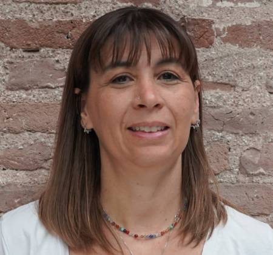
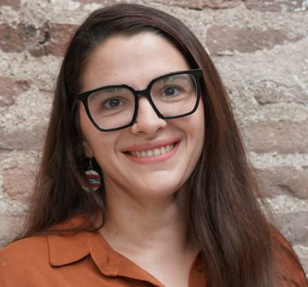
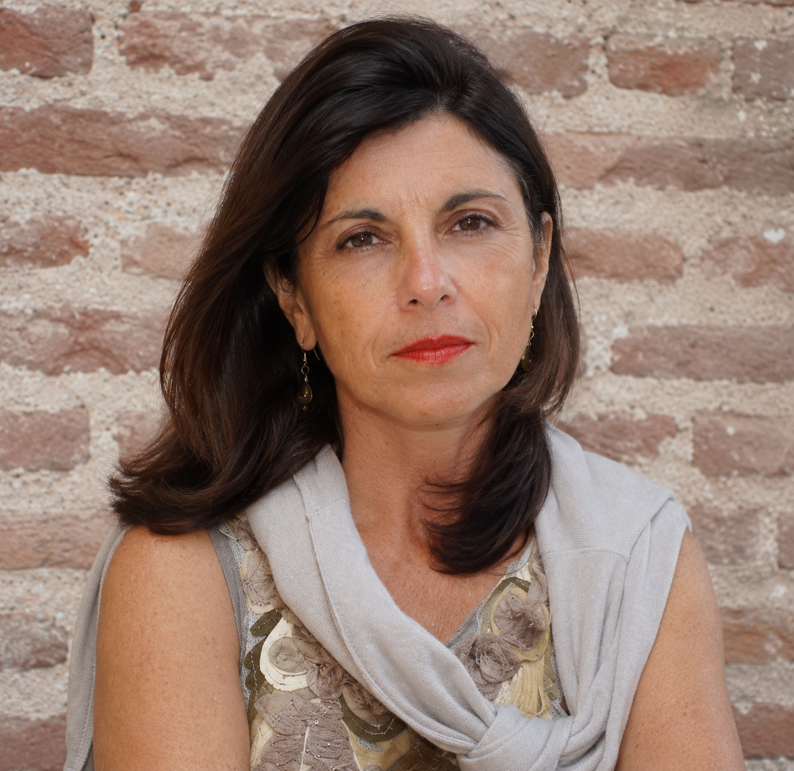
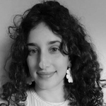
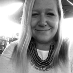

Trad. Púb. María Daniela Saccone
Directora de la Revista
Ver bio
María Daniela Saccone es traductora pública en idioma inglés y profesora de inglés, con sólida formación académica y experiencia docente en el ámbito universitario. Actualmente se desempeña como Directora del Traductorado Público en Idioma Inglés de la Universidad Nacional de Lanús. Asimismo, está a cargo de las asignaturas Traducción Técnica II y Traducción Técnica III.
Trad. Púb. Nadia Couselo
Editora Responsable
Ver bio
Nadia Couselo es traductora pública en idioma inglés y profesora de inglés, especializada en educación superior, con quince años de experiencia docente en el ámbito universitario. Actualmente se desempeña como Coordinadora del Traductorado Público en Idioma Inglés de la Universidad Nacional de Lanús. Asimismo, está a cargo de las asignaturas Lengua Inglesa I, Lengua Inglesa II y Lengua Especializada I. Dirige, además, una escuela de idiomas especializada en inglés corporativo y jurídico.
Trad. Púb. María Victoria Illas
Coeditora
Ver bio
María Victoria Illas es traductora pública en idioma inglés, especializada en medicina y farmacología. Actualmente se desempeña como traductora freelance y correctora en el ámbito científico, principalmente médico. Asimismo, es docente orientadora en los dos tramos de Prácticas Preprofesionales y en los trabajos finales integradores (TFI)de cierre de carrera.
Lic. Melisa Cerda
Diseñadora
Ver bio
Melisa Beatriz Cerda es Licenciada en Diseño y Comunicación Visual por la Universidad Nacional de Lanús. Es docente e investigadora en la carrera y trabaja en el diseño editorial, diseño web y programación de las publicaciones de investigación del Departamento de Humanidades y Artes de la Universidad Nacional de Lanús.
Esp. Estefanía Fondevila Sancet
Coordinadora de Investigación del Departamento de HyA